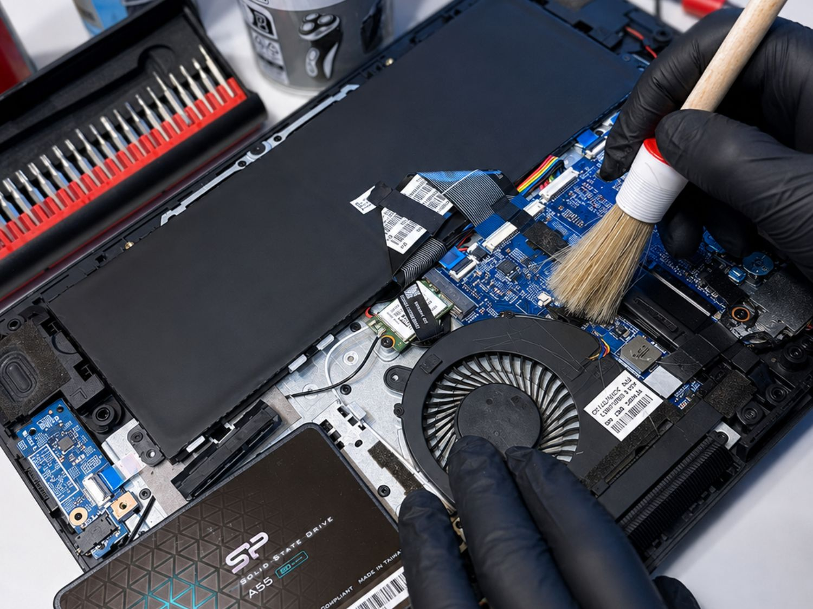
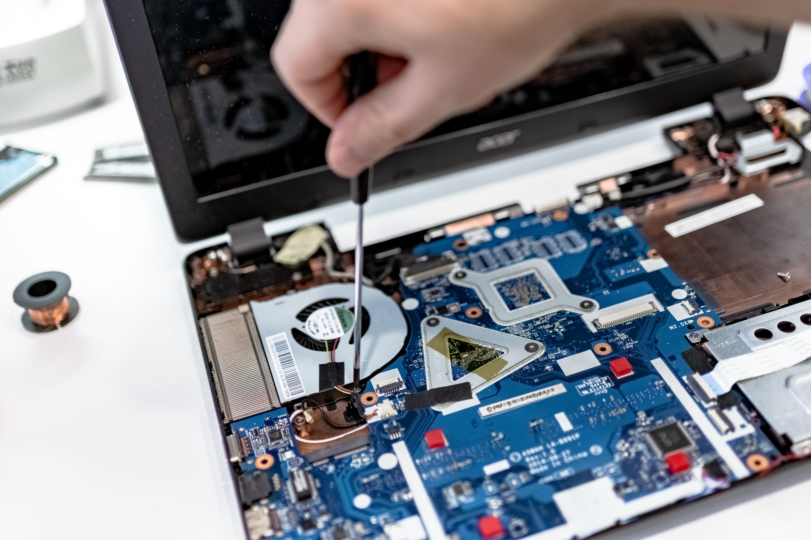
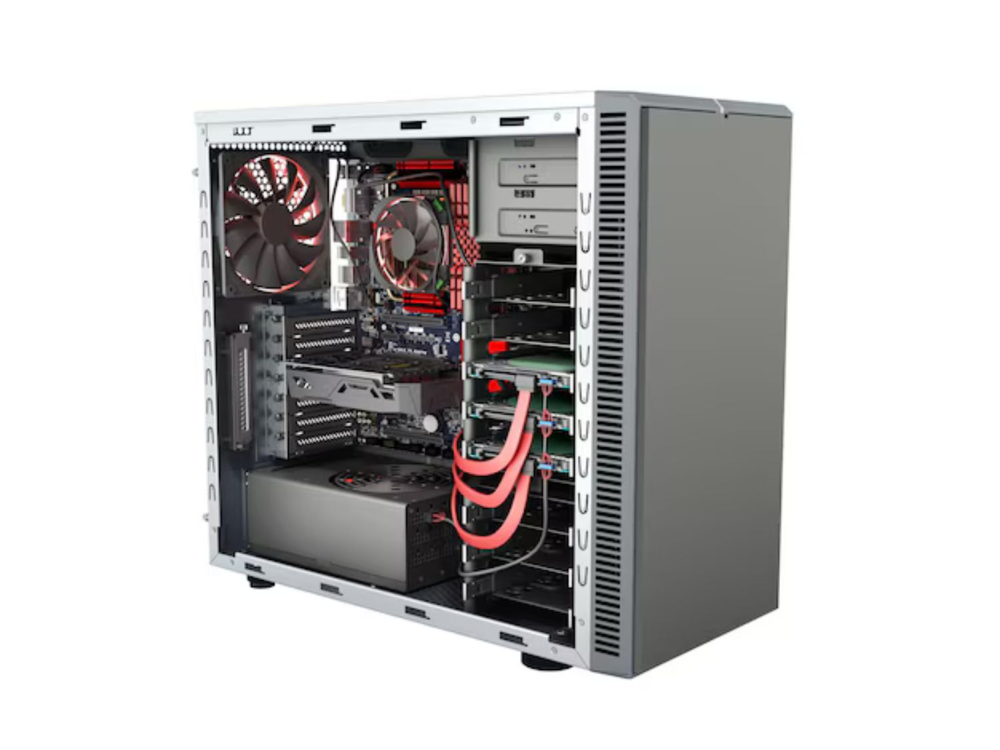
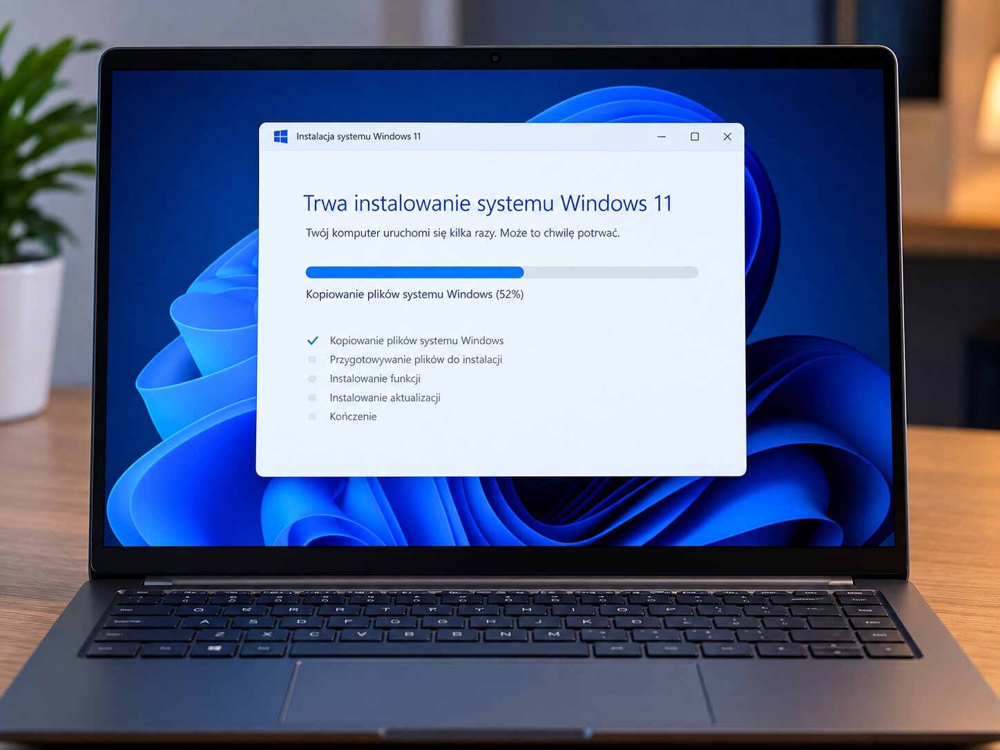
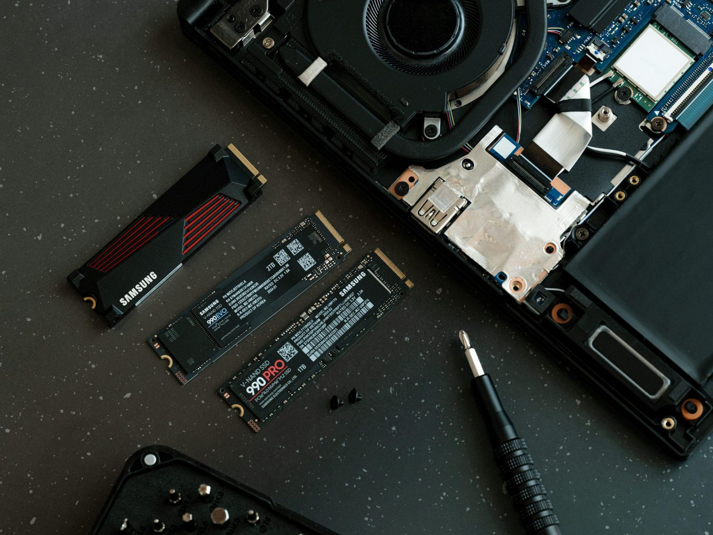
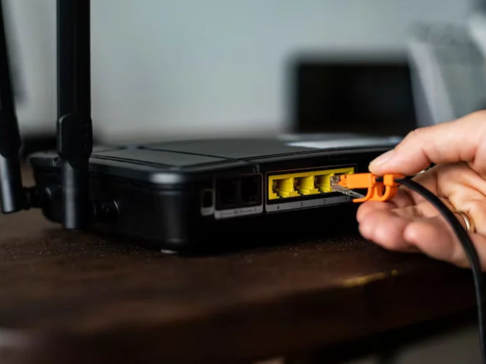

Serwis laptopów
Czyszczenie, wymiana pasty termicznej, modernizacja, wymiana podzespołów i przyspieszanie laptopów.
Zobacz usługiNaprawa komputerów, laptopów, instalacja Windows, modernizacja sprzętu oraz konfiguracja Wi-Fi i sieci.

Pomoc komputerowa i usługi informatyczne z dojazdem na terenie Tarnowa i okolic.

Czyszczenie, wymiana pasty termicznej, modernizacja, wymiana podzespołów i przyspieszanie laptopów.
Zobacz usługi
Diagnostyka, czyszczenie, modernizacja oraz składanie komputerów stacjonarnych.
Zobacz usługi
Instalacja i konfiguracja Windows 10/11, sterowników oraz przygotowanie komputera do pracy.
Zobacz usługi
Dobór i montaż SSD, RAM, karty graficznej, chłodzenia oraz innych podzespołów.
Zobacz usługi
Konfiguracja routerów, sieci Mesh i Access Pointów. Pomagam poprawić zasięg Wi-Fi oraz skonfigurować switche, drukarki sieciowe i NAS w domu lub małej firmie.
Zobacz usługiObsługuję klientów w Tarnowie i okolicach, w promieniu do 30 km. Usługi wykonuję na miejscu u klienta lub po wcześniejszym uzgodnieniu przyjmuję sprzęt do serwisu.
Przykładowe ceny najczęściej wybieranych usług. Ceny dotyczą robocizny. Części zamienne są wyceniane indywidualnie.
Montaż SSD + migracja systemu i danych
249 zł + koszt SSDCzyszczenie układu chłodzenia + pasta termiczna
199 złSkładanie komputera z części klienta
280 złKonfiguracja routera + jednego AP lub systemu Mesh
249 złSkontaktuj się, aby opisać problem i ustalić termin wizyty.
Telefon: 792 848 517
E-mail: techwsparcie@proton.me
Mobilny serwis komputerów z dojazdem do klienta w Tarnowie i okolicach do 30 km.